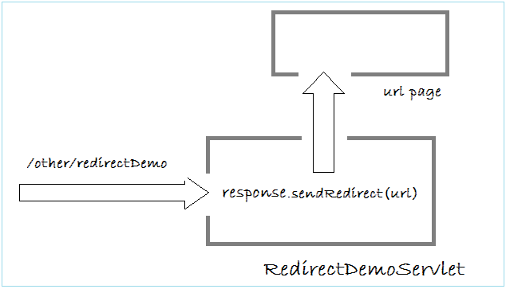

Redirect
Khi một yêu cầu được gửi đi từ người dùng đến Servlet A,
Servlet này có thể chuyển yêu cầu tới một trang khác và kết thúc
nhiệm vụ của nó.
Trang được chuyển hướng tới có thể là trong ứng dụng hoặc một
trang bất kỳ. Địa chỉ trên trình duyệt của người dùng lúc này sẽ hiển
thị đường dẫn của trang B.
